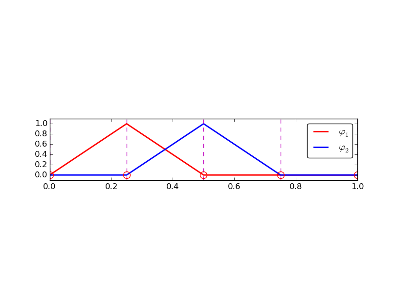

Function approximation by finite elements
The purpose of this chapter is to use the ideas from the previous chapter to approximate functions, but the basis functions are now of finite element type.
Finite element basis functions
The specific basis functions exemplified in the section Approximation principles are in general nonzero on the entire domain \( \Omega \), as can be seen in Figure 27, where we plot two sinusoidal basis functions \( \psi_0(x)=\sin\half\pi x \) and \( \psi_1(x)=\sin 2\pi x \) together with the sum \( u(x)=4\psi_0(x) - \half\psi_1(x) \). We shall now turn our attention to basis functions that have compact support, meaning that they are nonzero on a small portion of \( \Omega \) only. Moreover, we shall restrict the functions to be piecewise polynomials. This means that the domain is split into subdomains and each basis function is a polynomial on one or more of these subdomains, see Figure 28 for a sketch involving locally defined hat functions that make \( u=\sum_jc_j\baspsi_j \) piecewise linear. At the boundaries between subdomains, one normally just forces continuity of \( u \), so that when connecting two polynomials from two subdomains, the derivative becomes discontinuous. This type of basis functions is fundamental in the finite element method. (One may wonder why continuity of derivatives is not desired, and it is, but it turns out to be mathematically challenging in 2D and 3D, and it is not strictly needed.)
Figure 27: A function resulting from a weighted sum of two sine basis functions.

Figure 28: A function resulting from a weighted sum of three local piecewise linear (hat) functions.

We first introduce the concepts of elements and nodes in a simplistic fashion. Later, we shall generalize the concept of an element, which is a necessary step before treating a wider class of approximations within the family of finite element methods. The generalization is also compatible with the concepts used in the FEniCS finite element software.
Elements and nodes
Let \( u \) and \( f \) be defined on an interval \( \Omega \). We divide \( \Omega \) into \( N_e \) non-overlapping subintervals \( \Omega^{(e)} \), \( e=0,\ldots,N_e-1 \): $$ \begin{equation} \Omega = \Omega^{(0)}\cup \cdots \cup \Omega^{(N_e)}\tp \tag{3.1} \end{equation} $$ We shall for now refer to \( \Omega^{(e)} \) as an element, identified by the unique number \( e \). On each element we introduce a set of points called nodes. For now we assume that the nodes are uniformly spaced throughout the element and that the boundary points of the elements are also nodes. The nodes are given numbers both within an element and in the global domain. These are referred to as local and global node numbers, respectively. Local nodes are numbered with an index \( r=0,\ldots,d \), while the \( N_n \) global nodes are numbered as \( i=0,\ldots,N_n-1 \). Figure 29 shows nodes as small circular disks and element boundaries as small vertical lines. Global node numbers appear under the nodes, but local node numbers are not shown. Since there are two nodes in each elements, the local nodes are numbered 0 (left) and 1 (right) in each element.
Figure 29: Finite element mesh with 5 elements and 6 nodes.

Nodes and elements uniquely define a finite element mesh, which is our discrete representation of the domain in the computations. A common special case is that of a uniformly partitioned mesh where each element has the same length and the distance between nodes is constant. Figure 29 shows an example on a uniformly partitioned mesh. The strength of the finite element method (in contrast to the finite difference method) is that it is equally easy to work with a non-uniformly partitioned mesh as a uniformly partitioned one.
Example
On \( \Omega =[0,1] \) we may introduce two elements, \( \Omega^{(0)}=[0,0.4] \) and \( \Omega^{(1)}=[0.4,1] \). Furthermore, let us introduce three nodes per element, equally spaced within each element. Figure 30 shows the mesh with \( N_e=2 \) elements and \( N_n=2N_e+1=5 \) nodes. A node's coordinate is denoted by \( x_i \), where \( i \) is either a global node number or a local one. In the latter case we also need to know the element number to uniquely define the node.
The three nodes in element number 0 are \( x_0=0 \), \( x_1=0.2 \), and \( x_2=0.4 \). The local and global node numbers are here equal. In element number 1, we have the local nodes \( x_0=0.4 \), \( x_1=0.7 \), and \( x_2=1 \) and the corresponding global nodes \( x_2=0.4 \), \( x_3=0.7 \), and \( x_4=1 \). Note that the global node \( x_2=0.4 \) is shared by the two elements.
Figure 30: Finite element mesh with 2 elements and 5 nodes.

For the purpose of implementation, we introduce two lists or arrays:
nodes for storing the coordinates of the nodes, with the global node
numbers as indices, and elements for holding the global node numbers
in each element. By defining elements as a list of lists, where each
sublist contains the global node numbers of one particular element,
the indices of each sublist will correspond to local node numbers for
that element. The nodes and elements lists for the sample mesh
above take the form
nodes = [0, 0.2, 0.4, 0.7, 1]
elements = [[0, 1, 2], [2, 3, 4]]
Looking up the coordinate of, e.g., local node number 2 in element 1,
is done by nodes[elements[1][2]] (recall that nodes and
elements start their numbering at 0). The corresponding global node number
is 4, so we could alternatively look up the coordinate as nodes[4].
The numbering of elements and nodes does not need to be regular. Figure 31 shows and example corresponding to
nodes = [1.5, 5.5, 4.2, 0.3, 2.2, 3.1]
elements = [[2, 1], [4, 5], [0, 4], [3, 0], [5, 2]]
Figure 31: Example on irregular numbering of elements and nodes.

The basis functions
Construction principles
Finite element basis functions are in this text recognized by the notation \( \basphi_i(x) \), where the index (now in the beginning) corresponds to a global node number. Since \( \baspsi_i \) is the symbol for basis functions in general in this text, the particular choice of finite element basis functions means that we take \( \baspsi_i = \basphi_i \).
Let \( i \) be the global node number corresponding to local node \( r \) in element number \( e \) with \( d+1 \) local nodes. We distinguish between internal nodes in an element and shared nodes. The latter are nodes that are shared with the neighboring elements. The finite element basis functions \( \basphi_i \) are now defined as follows.
- For an internal node, with global number \( i \) and local number \( r \), take \( \basphi_i(x) \) to be the Lagrange polynomial that is 1 at the local node \( r \) and zero at all other nodes in the element. The degree of the polynomial is \( d \), according to (2.56). On all other elements, \( \basphi_i=0 \).
- For a shared node, let \( \basphi_i \) be made up of the Lagrange polynomial on this element that is 1 at node \( i \), combined with the Lagrange polynomial over the neighboring element that is also 1 at node \( i \). On all other elements, \( \basphi_i=0 \).
Figure 32: Illustration of the piecewise quadratic basis functions associated with nodes in an element.

Figure 33: Illustration of the derivatives of piecewise quadratic basis functions associated with nodes in an element.

Properties of \( \basphi_i \)
The construction of basis functions according to the principles above lead to two important properties of \( \basphi_i(x) \). First, $$ \begin{equation} \basphi_i(\xno{j}) =\delta_{ij},\quad \delta_{ij} = \left\lbrace\begin{array}{ll} 1, & i=j,\\ 0, & i\neq j, \end{array}\right. \tag{3.2} \end{equation} $$ when \( \xno{j} \) is a node in the mesh with global node number \( j \). The result \( \basphi_i(\xno{j}) =\delta_{ij} \) is obtained as the Lagrange polynomials are constructed to have exactly this property. The property also implies a convenient interpretation of \( c_i \) as the value of \( u \) at node \( i \). To show this, we expand \( u \) in the usual way as \( \sum_jc_j\baspsi_j \) and choose \( \baspsi_i = \basphi_i \): $$ u(\xno{i}) = \sum_{j\in\If} c_j \baspsi_j (\xno{i}) = \sum_{j\in\If} c_j \basphi_j (\xno{i}) = c_i \basphi_i (\xno{i}) = c_i \tp $$ Because of this interpretation, the coefficient \( c_i \) is by many named \( u_i \) or \( U_i \).
Second, \( \basphi_i(x) \) is mostly zero throughout the domain:
- \( \basphi_i(x) \neq 0 \) only on those elements that contain global node \( i \),
- \( \basphi_i(x)\basphi_j(x) \neq 0 \) if and only if \( i \) and \( j \) are global node numbers in the same element.
In our example so far, each element has \( d+1 \) nodes, resulting in local Lagrange polynomials of degree \( d \) (according to the section Lagrange polynomials), but it is not a requirement to have the same \( d \) value in each element.
Example on quadratic finite element functions
Let us set up the nodes and elements lists corresponding to the
mesh implied by Figure 32.
Figure 34 sketches the mesh and the
numbering. We have
nodes = [0, 0.125, 0.25, 0.375, 0.5, 0.625, 0.75, 0.875, 1.0]
elements = [[0, 1, 2], [2, 3, 4], [4, 5, 6], [6, 7, 8]]
Figure 34: Sketch of mesh with 4 elements and 3 nodes per element.

Let us explain mathematically how the basis functions are constructed according to the principles. Consider element number 1 in Figure 34, \( \Omega^{(1)}=[0.25, 0.5] \), with local nodes 0, 1, and 2 corresponding to global nodes 2, 3, and 4. The coordinates of these nodes are \( 0.25 \), \( 0.375 \), and \( 0.5 \), respectively. We define three Lagrange polynomials on this element:
- The polynomial that is 1 at local node 1 (global node 3) makes up the basis function \( \basphi_3(x) \) over this element, with \( \basphi_3(x)=0 \) outside the element.
- The polynomial that is 1 at local node 0 (global node 2) is the "right part" of the global basis function \( \basphi_2(x) \). The "left part" of \( \basphi_2(x) \) consists of a Lagrange polynomial associated with local node 2 in the neighboring element \( \Omega^{(0)}=[0, 0.25] \).
- Finally, the polynomial that is 1 at local node 2 (global node 4) is the "left part" of the global basis function \( \basphi_4(x) \). The "right part" comes from the Lagrange polynomial that is 1 at local node 0 in the neighboring element \( \Omega^{(2)}=[0.5, 0.75] \).
As mentioned earlier, any global basis function \( \basphi_i(x) \) is zero on elements that do not contain the node with global node number \( i \). Clearly, the property (3.2) is easily verified, see for instance that \( \basphi_3(0.375) = 1 \) while \( \basphi_3(0.25) = 0 \) and \( \basphi_3(0.5) = 0 \).
The other global functions associated with internal nodes, \( \basphi_1 \), \( \basphi_5 \), and \( \basphi_7 \), are all of the same shape as the drawn \( \basphi_3 \) in Figure 32, while the global basis functions associated with shared nodes have the same shape as shown \( \basphi_2 \) and \( \basphi_4 \). If the elements were of different length, the basis functions would be stretched according to the element size and hence be different.
Example on linear finite element functions
Figure 35 shows piecewise linear basis functions (\( d=1 \)) (with derivatives in Figure 36). These are mathematically simpler than the quadratic functions in the previous section, and one would therefore think that it is easier to understand the linear functions first. However, linear basis functions do not involve internal nodes and are therefore a special case of the general situation. That is why we think it is better to understand the construction of quadratic functions first, which easily generalize to any \( d > 2 \), and then look at the special case \( d=1 \).
Figure 35: Illustration of the piecewise linear basis functions associated with nodes in an element.

Figure 36: Illustration of the derivatives of piecewise linear basis functions associated with nodes in an element.

We have the same four elements on \( \Omega = [0,1] \). Now there are no internal nodes in the elements so that all basis functions are associated with shared nodes and hence made up of two Lagrange polynomials, one from each of the two neighboring elements. For example, \( \basphi_1(x) \) results from the Lagrange polynomial in element 0 that is 1 at local node 1 and 0 at local node 0, combined with the Lagrange polynomial in element 1 that is 1 at local node 0 and 0 at local node 1. The other basis functions are constructed similarly.
Explicit mathematical formulas are needed for \( \basphi_i(x) \) in computations. In the piecewise linear case, the formula (2.56) leads to $$ \begin{equation} \basphi_i(x) = \left\lbrace\begin{array}{ll} 0, & x < \xno{i-1},\\ (x - \xno{i-1})/(\xno{i} - \xno{i-1}), & \xno{i-1} \leq x < \xno{i},\\ 1 - (x - x_{i})/(\xno{i+1} - x_{i}), & \xno{i} \leq x < \xno{i+1},\\ 0, & x\geq \xno{i+1}\tp \end{array} \right. \tag{3.3} \end{equation} $$ Here, \( \xno{j} \), \( j=i-1,i,i+1 \), denotes the coordinate of node \( j \). For elements of equal length \( h \) the formulas can be simplified to $$ \begin{equation} \basphi_i(x) = \left\lbrace\begin{array}{ll} 0, & x < \xno{i-1},\\ (x - \xno{i-1})/h, & \xno{i-1} \leq x < \xno{i},\\ 1 - (x - x_{i})/h, & \xno{i} \leq x < \xno{i+1},\\ 0, & x\geq \xno{i+1} \end{array} \right. \tag{3.4} \end{equation} $$
Example on cubic finite element functions
Piecewise cubic basis functions can be defined by introducing four nodes per element. Figure 37 shows examples on \( \basphi_i(x) \), \( i=3,4,5,6 \), associated with element number 1. Note that \( \basphi_4 \) and \( \basphi_5 \) are nonzero only on element number 1, while \( \basphi_3 \) and \( \basphi_6 \) are made up of Lagrange polynomials on two neighboring elements.
Figure 37: Illustration of the piecewise cubic basis functions associated with nodes in an element.

We see that all the piecewise linear basis functions have the same "hat" shape. They are naturally referred to as hat functions, also called chapeau functions. The piecewise quadratic functions in Figure 32 are seen to be of two types. "Rounded hats" associated with internal nodes in the elements and some more "sombrero" shaped hats associated with element boundary nodes. Higher-order basis functions also have hat-like shapes, but the functions have pronounced oscillations in addition, as illustrated in Figure 37.
A common terminology is to speak about linear elements as elements with two local nodes associated with piecewise linear basis functions. Similarly, quadratic elements and cubic elements refer to piecewise quadratic or cubic functions over elements with three or four local nodes, respectively. Alternative names, frequently used in the following, are P1 elements for linear elements, P2 for quadratic elements, and so forth: P$d$ signifies degree \( d \) of the polynomial basis functions.
Calculating the linear system
The elements in the coefficient matrix and right-hand side are given by the formulas (2.28) and (2.29), but now the choice of \( \baspsi_i \) is \( \basphi_i \). Consider P1 elements where \( \basphi_i(x) \) is piecewise linear. Nodes and elements numbered consecutively from left to right in a uniformly partitioned mesh imply the nodes $$ x_i=i h,\quad i=0,\ldots,N_n-1,$$ and the elements $$ \begin{equation} \Omega^{(i)} = [\xno{i},\xno{i+1}] = [i h, (i+1)h],\quad i=0,\ldots,N_e-1 \tp \tag{3.5} \end{equation} $$ We have in this case \( N_e \) elements and \( N_n=N_e+1 \) nodes. The parameter \( N \) denotes the number of unknowns in the expansion for \( u \), and with the P1 elements, \( N=N_n \). The domain is \( \Omega=[\xno{0},\xno{N}] \). The formula for \( \basphi_i(x) \) is given by (3.4) and a graphical illustration is provided in Figures 35 and 39.
Figure 38: Illustration of the piecewise linear basis functions corresponding to global node 2 and 3.

Calculating specific matrix entries
Let us calculate the specific matrix entry \( A_{2,3} = \int_\Omega \basphi_2\basphi_3\dx \). Figure 38 shows what \( \basphi_2 \) and \( \basphi_3 \) look like. We realize from this figure that the product \( \basphi_2\basphi_3\neq 0 \) only over element 2, which contains node 2 and 3. The particular formulas for \( \basphi_{2}(x) \) and \( \basphi_3(x) \) on \( [\xno{2},\xno{3}] \) are found from (3.4). The function \( \basphi_3 \) has positive slope over \( [\xno{2},\xno{3}] \) and corresponds to the interval \( [\xno{i-1},\xno{i}] \) in (3.4). With \( i=3 \) we get $$ \basphi_3(x) = (x-x_2)/h,$$ while \( \basphi_2(x) \) has negative slope over \( [\xno{2},\xno{3}] \) and corresponds to setting \( i=2 \) in (3.4), $$ \basphi_2(x) = 1- (x-x_2)/h\tp$$ We can now easily integrate, $$ A_{2,3} = \int_\Omega \basphi_2\basphi_{3}\dx = \int_{\xno{2}}^{\xno{3}} \left(1 - \frac{x - \xno{2}}{h}\right) \frac{x - x_{2}}{h} \dx = \frac{h}{6}\tp $$
The diagonal entry in the coefficient matrix becomes $$ A_{2,2} = \int_{\xno{1}}^{\xno{2}} \left(\frac{x - \xno{1}}{h}\right)^2\dx + \int_{\xno{2}}^{\xno{3}} \left(1 - \frac{x - \xno{2}}{h}\right)^2\dx = \frac{2h}{3}\tp $$ The entry \( A_{2,1} \) has an integral that is geometrically similar to the situation in Figure 38, so we get \( A_{2,1}=h/6 \).
Calculating a general row in the matrix
We can now generalize the calculation of matrix entries to a general row number \( i \). The entry \( A_{i,i-1}=\int_\Omega\basphi_i\basphi_{i-1}\dx \) involves hat functions as depicted in Figure 39. Since the integral is geometrically identical to the situation with specific nodes 2 and 3, we realize that \( A_{i,i-1}=A_{i,i+1}=h/6 \) and \( A_{i,i}=2h/3 \). However, we can compute the integral directly too: $$ \begin{align*} A_{i,i-1} &= \int_\Omega \basphi_i\basphi_{i-1}\dx\\ &= \underbrace{\int_{\xno{i-2}}^{\xno{i-1}} \basphi_i\basphi_{i-1}\dx}_{\basphi_i=0} + \int_{\xno{i-1}}^{\xno{i}} \basphi_i\basphi_{i-1}\dx + \underbrace{\int_{\xno{i}}^{\xno{i+1}} \basphi_i\basphi_{i-1}\dx}_{\basphi_{i-1}=0}\\ &= \int_{\xno{i-1}}^{\xno{i}} \underbrace{\left(\frac{x - x_{i}}{h}\right)}_{\basphi_i(x)} \underbrace{\left(1 - \frac{x - \xno{i-1}}{h}\right)}_{\basphi_{i-1}(x)} \dx = \frac{h}{6} \tp \end{align*} $$ The particular formulas for \( \basphi_{i-1}(x) \) and \( \basphi_i(x) \) on \( [\xno{i-1},\xno{i}] \) are found from (3.4): \( \basphi_i \) is the linear function with positive slope, corresponding to the interval \( [\xno{i-1},\xno{i}] \) in (3.4), while \( \phi_{i-1} \) has a negative slope so the definition in interval \( [\xno{i},\xno{i+1}] \) in (3.4) must be used.
Figure 39: Illustration of two neighboring linear (hat) functions with general node numbers.

The first and last row of the coefficient matrix lead to slightly different integrals: $$ A_{0,0} = \int_\Omega \basphi_0^2\dx = \int_{\xno{0}}^{\xno{1}} \left(1 - \frac{x-x_0}{h}\right)^2\dx = \frac{h}{3}\tp $$ Similarly, \( A_{N,N} \) involves an integral over only one element and hence equals \( h/3 \).
Figure 40: Right-hand side integral with the product of a basis function and the given function to approximate.

The general formula for \( b_i \), see Figure 40, is now easy to set up $$ \begin{equation} b_i = \int_\Omega\basphi_i(x)f(x)\dx = \int_{\xno{i-1}}^{\xno{i}} \frac{x - \xno{i-1}}{h} f(x)\dx + \int_{x_{i}}^{\xno{i+1}} \left(1 - \frac{x - x_{i}}{h}\right) f(x) \dx\tp \tag{3.6} \end{equation} $$ We remark that the above formula applies to internal nodes (living at the interface between two elements) and that for the nodes on the boundaries only one integral needs to be computed.
We need a specific \( f(x) \) function to compute these integrals. With \( f(x)=x(1-x) \) and two equal-sized elements in \( \Omega=[0,1] \), one gets $$ \begin{equation*} A = \frac{h}{6}\left(\begin{array}{ccc} 2 & 1 & 0\\ 1 & 4 & 1\\ 0 & 1 & 2 \end{array}\right),\quad b = \frac{h^2}{12}\left(\begin{array}{c} 2 - h\\ 12 - 14h\\ 10 -17h \end{array}\right)\tp \end{equation*} $$ The solution becomes $$ \begin{equation*} c_0 = \frac{h^2}{6},\quad c_1 = h - \frac{5}{6}h^2,\quad c_2 = 2h - \frac{23}{6}h^2\tp \end{equation*} $$ The resulting function $$ \begin{equation*} u(x)=c_0\basphi_0(x) + c_1\basphi_1(x) + c_2\basphi_2(x)\end{equation*} $$ is displayed in Figure 41 (left). Doubling the number of elements to four leads to the improved approximation in the right part of Figure 41.
Figure 41: Least squares approximation of a parabola using 2 (left) and 4 (right) P1 elements.

Assembly of elementwise computations
Our integral computations so far have been straightforward. However, with higher-degree polynomials and in higher dimensions (2D and 3D), integrating in the physical domain gets increasingly complicated. Instead, integrating over one element at a time, and transforming each element to a common standardized geometry in a new reference coordinate system, is technically easier. Almost all computer codes employ a finite element algorithm that calculates the linear system by integrating over one element at a time. We shall therefore explain this algorithm next. The amount of details might be overwhelming during a first reading, but once all those details are done right, one has a general finite element algorithm that can be applied to all sorts of elements, in any space dimension, no matter how geometrically complicated the domain is.
The element matrix
We start by splitting
the integral over \( \Omega \) into a sum of contributions from
each element:
$$
\begin{equation}
A_{i,j} = \int_\Omega\basphi_i\basphi_j \dx = \sum_{e} A^{(e)}_{i,j},\quad
A^{(e)}_{i,j}=\int_{\Omega^{(e)}} \basphi_i\basphi_j \dx
\tp
\tag{3.7}
\end{equation}
$$
Now, \( A^{(e)}_{i,j}\neq 0 \), if and only if, \( i \) and \( j \) are nodes in element
\( e \) (look at Figure 39 to realize this
property, but the result also holds for all types of elements).
Introduce \( i=q(e,r) \) as the mapping of local node number \( r \) in element
\( e \) to the global node number \( i \). This is just a short mathematical notation
for the expression i=elements[e][r] in a program.
Let \( r \) and \( s \) be the local node numbers corresponding to the global
node numbers \( i=q(e,r) \) and
\( j=q(e,s) \). With \( d+1 \) nodes per element, all the nonzero matrix entries
in \( A^{(e)}_{i,j} \) arise from the integrals involving basis functions with
indices corresponding to the global node numbers in element number \( e \):
$$
\begin{equation*}
\int_{\Omega^{(e)}}\basphi_{q(e,r)}\basphi_{q(e,s)} \dx,
\quad r,s=0,\ldots, d\tp
\end{equation*}
$$
These contributions can be collected in a \( (d+1)\times (d+1) \) matrix known as
the element matrix. Let \( \Ifd=\{0,\ldots,d\} \) be the valid indices
of \( r \) and \( s \).
We introduce the notation
$$
\begin{equation*}
\tilde A^{(e)} = \{ \tilde A^{(e)}_{r,s}\},\quad
r,s\in\Ifd,
\end{equation*}
$$
for the element matrix. For P1 elements (\( d=2 \)) we have
$$
\begin{equation*}
\tilde A^{(e)} = \left\lbrack\begin{array}{ll}
\tilde A^{(e)}_{0,0} & \tilde A^{(e)}_{0,1}\\
\tilde A^{(e)}_{1,0} & \tilde A^{(e)}_{1,1}
\end{array}\right\rbrack
\tp
\end{equation*}
$$
while P2 elements have a \( 3\times 3 \) element matrix:
$$
\begin{equation*}
\tilde A^{(e)} = \left\lbrack\begin{array}{lll}
\tilde A^{(e)}_{0,0} & \tilde A^{(e)}_{0,1} & \tilde A^{(e)}_{0,2}\\
\tilde A^{(e)}_{1,0} & \tilde A^{(e)}_{1,1} & \tilde A^{(e)}_{1,2}\\
\tilde A^{(e)}_{2,0} & \tilde A^{(e)}_{2,1} & \tilde A^{(e)}_{2,2}
\end{array}\right\rbrack
\tp
\end{equation*}
$$
Assembly of element matrices
Given the numbers \( \tilde A^{(e)}_{r,s} \), we should, according to (3.7), add the contributions to the global coefficient matrix by $$ \begin{equation} A_{q(e,r),q(e,s)} := A_{q(e,r),q(e,s)} + \tilde A^{(e)}_{r,s},\quad r,s\in\Ifd\tp \tag{3.8} \end{equation} $$ This process of adding in elementwise contributions to the global matrix is called finite element assembly or simply assembly.
Figure 42 illustrates how element matrices for elements with two nodes are added into the global matrix. More specifically, the figure shows how the element matrix associated with elements 1 and 2 assembled, assuming that global nodes are numbered from left to right in the domain. With regularly numbered P3 elements, where the element matrices have size \( 4\times 4 \), the assembly of elements 1 and 2 are sketched in Figure 43.
Figure 42: Illustration of matrix assembly: regularly numbered P1 elements.

Figure 43: Illustration of matrix assembly: regularly numbered P3 elements.

Assembly of irregularly numbered elements and nodes
After assembly of element matrices corresponding to regularly numbered elements
and nodes are understood, it is wise to study the assembly process for
irregularly numbered elements and nodes. Figure 31 shows a mesh where the elements array, or \( q(e,r) \)
mapping in mathematical notation, is given as
elements = [[2, 1], [4, 5], [0, 4], [3, 0], [5, 2]]
The associated assembly of element matrices 1 and 2 is sketched in Figure 44.
We have created animations to illustrate the assembly of P1 and P3 elements with regular numbering as well as P1 elements with irregular numbering. The reader is encouraged to develop a "geometric" understanding of how element matrix entries are added to the global matrix. This understanding is crucial for hand computations with the finite element method.
Figure 44: Illustration of matrix assembly: irregularly numbered P1 elements.

The element vector
The right-hand side of the linear system is also computed elementwise: $$ \begin{equation} b_i = \int_\Omega f(x)\basphi_i(x) \dx = \sum_{e} b^{(e)}_{i},\quad b^{(e)}_{i}=\int_{\Omega^{(e)}} f(x)\basphi_i(x)\dx \tp \tag{3.9} \end{equation} $$ We observe that \( b_i^{(e)}\neq 0 \) if and only if global node \( i \) is a node in element \( e \) (look at Figure 40 to realize this property). With \( d \) nodes per element we can collect the \( d+1 \) nonzero contributions \( b_i^{(e)} \), for \( i=q(e,r) \), \( r\in\Ifd \), in an element vector $$ \begin{equation*} \tilde b_r^{(e)}=\{ \tilde b_r^{(e)}\},\quad r\in\Ifd\tp \end{equation*} $$ These contributions are added to the global right-hand side by an assembly process similar to that for the element matrices: $$ \begin{equation} b_{q(e,r)} := b_{q(e,r)} + \tilde b^{(e)}_{r},\quad r\in\Ifd\tp \tag{3.10} \end{equation} $$
Mapping to a reference element
Instead of computing the integrals $$ \begin{equation*} \tilde A^{(e)}_{r,s} = \int_{\Omega^{(e)}}\basphi_{q(e,r)}(x)\basphi_{q(e,s)}(x)\dx\end{equation*} $$ over some element \( \Omega^{(e)} = [x_L, x_R] \) in the physical coordinate system, it turns out that it is considerably easier and more convenient to map the element domain \( [x_L, x_R] \) to a standardized reference element domain \( [-1,1] \) and compute all integrals over the same domain \( [-1,1] \). We have now introduced \( x_L \) and \( x_R \) as the left and right boundary points of an arbitrary element. With a natural, regular numbering of nodes and elements from left to right through the domain, we have \( x_L=\xno{e} \) and \( x_R=\xno{e+1} \) for P1 elements.
The coordinate transformation
Let \( X\in [-1,1] \) be the coordinate in the reference element. A linear mapping, also known as an affine mapping, from \( X \) to \( x \) can be written $$ \begin{equation} x = \half (x_L + x_R) + \half (x_R - x_L)X\tp \tag{3.11} \end{equation} $$ This relation can alternatively be expressed as $$ \begin{equation} x = x_m + {\half}hX, \tag{3.12} \end{equation} $$ where we have introduced the element midpoint \( x_m=(x_L+x_R)/2 \) and the element length \( h=x_R-x_L \).
Formulas for the element matrix and vector entries
Integrating on the reference element is a matter of just changing the integration variable from \( x \) to \( X \). Let $$ \begin{equation} \refphi_r(X) = \basphi_{q(e,r)}(x(X)) \tag{3.13} \end{equation} $$ be the basis function associated with local node number \( r \) in the reference element. Switching from \( x \) to \( X \) as integration variable, using the rules from calculus, results in $$ \begin{equation} \tilde A^{(e)}_{r,s} = \int_{\Omega^{(e)}}\basphi_{q(e,r)}(x)\basphi_{q(e,s)}(x)\dx = \int_{-1}^1 \refphi_r(X)\refphi_s(X)\frac{\dx}{\dX}\dX \tp \tag{3.14} \end{equation} $$
In 2D and 3D, \( \dx \) is transformed to \( \hbox{det} J\dX \), where \( J \) is the Jacobian of the mapping from \( x \) to \( X \). In 1D, \( \hbox{det} J\dX = \dx/\dX = h/2 \). To obtain a uniform notation for 1D, 2D, and 3D problems we therefore replace \( \dx/\dX \) by \( \det J \) already now. The integration over the reference element is then written as $$ \begin{equation} \tilde A^{(e)}_{r,s} = \int_{-1}^1 \refphi_r(X)\refphi_s(X)\det J\,\dX \tag{3.15} \tp \end{equation} $$ The corresponding formula for the element vector entries becomes $$ \begin{equation} \tilde b^{(e)}_{r} = \int_{\Omega^{(e)}}f(x)\basphi_{q(e,r)}(x)\dx = \int_{-1}^1 f(x(X))\refphi_r(X)\det J\,\dX \tag{3.16} \tp \end{equation} $$
Formulas for local basis functions
The \( \refphi_r(x) \) functions are simply the Lagrange polynomials defined through the local nodes in the reference element. For \( d=1 \) and two nodes per element, we have the linear Lagrange polynomials $$ \begin{align} \refphi_0(X) &= \half (1 - X) \tag{3.17}\\ \refphi_1(X) &= \half (1 + X) \tag{3.18} \end{align} $$ Quadratic polynomials, \( d=2 \), have the formulas $$ \begin{align} \refphi_0(X) &= \half (X-1)X \tag{3.19}\\ \refphi_1(X) &= 1 - X^2 \tag{3.20}\\ \refphi_2(X) &= \half (X+1)X \tag{3.21} \end{align} $$ In general, $$ \begin{equation} \refphi_r(X) = \prod_{s=0,s\neq r}^d \frac{X-\Xno{s}}{\Xno{r}-\Xno{s}}, \tag{3.22} \end{equation} $$ where \( \Xno{0},\ldots,\Xno{d} \) are the coordinates of the local nodes in the reference element. These are normally uniformly spaced: \( \Xno{r} = -1 + 2r/d \), \( r\in\Ifd \).
Example on integration over a reference element
To illustrate the concepts from the previous section in a specific example, we now consider calculation of the element matrix and vector for a specific choice of \( d \) and \( f(x) \). A simple choice is \( d=1 \) (P1 elements) and \( f(x)=x(1-x) \) on \( \Omega =[0,1] \). We have the general expressions (3.15) and (3.16) for \( \tilde A^{(e)}_{r,s} \) and \( \tilde b^{(e)}_{r} \). Writing these out for the choices (3.17) and (3.18), and using that \( \det J = h/2 \), we can do the following calculations of the element matrix entries: $$ \begin{align} \tilde A^{(e)}_{0,0} &= \int_{-1}^1 \refphi_0(X)\refphi_0(X)\frac{h}{2} \dX\nonumber\\ &=\int_{-1}^1 \half(1-X)\half(1-X) \frac{h}{2} \dX = \frac{h}{8}\int_{-1}^1 (1-X)^2 \dX = \frac{h}{3}, \tag{3.23}\\ \tilde A^{(e)}_{1,0} &= \int_{-1}^1 \refphi_1(X)\refphi_0(X)\frac{h}{2} \dX\nonumber\\ &=\int_{-1}^1 \half(1+X)\half(1-X) \frac{h}{2} \dX = \frac{h}{8}\int_{-1}^1 (1-X^2) \dX = \frac{h}{6}, \tag{3.24}\\ \tilde A^{(e)}_{0,1} &= \tilde A^{(e)}_{1,0}, \tag{3.25}\\ \tilde A^{(e)}_{1,1} &= \int_{-1}^1 \refphi_1(X)\refphi_1(X)\frac{h}{2} \dX\nonumber\\ &=\int_{-1}^1 \half(1+X)\half(1+X) \frac{h}{2} \dX = \frac{h}{8}\int_{-1}^1 (1+X)^2 \dX = \frac{h}{3} \tag{3.26} \tp \end{align} $$
The corresponding entries in the element vector becomes using (3.12)) $$ \begin{align} \tilde b^{(e)}_{0} &= \int_{-1}^1 f(x(X))\refphi_0(X)\frac{h}{2} \dX\nonumber\\ &= \int_{-1}^1 (x_m + \half hX)(1-(x_m + \half hX)) \half(1-X)\frac{h}{2} \dX \nonumber\\ &= - \frac{1}{24} h^{3} + \frac{1}{6} h^{2} x_{m} - \frac{1}{12} h^{2} - \half h x_{m}^{2} + \half h x_{m} \tag{3.27}\\ \tilde b^{(e)}_{1} &= \int_{-1}^1 f(x(X))\refphi_1(X)\frac{h}{2} \dX\nonumber\\ &= \int_{-1}^1 (x_m + \half hX)(1-(x_m + \half hX)) \half(1+X)\frac{h}{2} \dX \nonumber\\ &= - \frac{1}{24} h^{3} - \frac{1}{6} h^{2} x_{m} + \frac{1}{12} h^{2} - \half h x_{m}^{2} + \half h x_{m} \tp \tag{3.28} \end{align} $$ In the last two expressions we have used the element midpoint \( x_m \).
Integration of lower-degree polynomials above is tedious,
and higher-degree polynomials involve much more algebra, but sympy
may help. For example, we can easily calculate
(3.23),
(3.24),
and (3.27) by
>>> import sympy as sym
>>> x, x_m, h, X = sym.symbols('x x_m h X')
>>> sym.integrate(h/8*(1-X)**2, (X, -1, 1))
h/3
>>> sym.integrate(h/8*(1+X)*(1-X), (X, -1, 1))
h/6
>>> x = x_m + h/2*X
>>> b_0 = sym.integrate(h/4*x*(1-x)*(1-X), (X, -1, 1))
>>> print(b_0)
-h**3/24 + h**2*x_m/6 - h**2/12 - h*x_m**2/2 + h*x_m/2